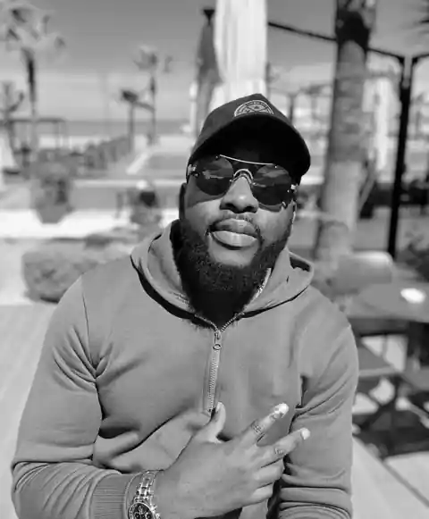

FOUR YEARS / ONE INFLUENCE
for Bro Benny
For the one
who saw it
before I did.
Mentor. Teacher. The one who kept pushing.

MENTOR PORTRAIT
Bro Benny
PHOTO TO BE ADDED
01 / THE PUSH
WHEN I WANTED TO STOP
“You are meant
to do it.”
He saw it before I did.
02 / THE METHOD
OBSERVE / COPY / UNDERSTAND
He trained
the eye.
WATCHRECREATEREVIEWREPEAT
03 / THE MOMENT
Then one day,
he said it was good.
It felt like graduation.
04 / WHAT REMAINED
The lessons
kept moving.
DESIGNMOTIONWEBPHOTOGRAPHY
WITH GRATITUDE.
for Bro Benny